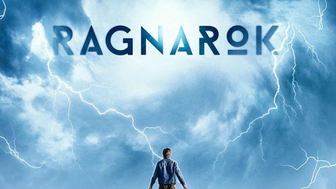

TITANS
Se trata de una reunión de distintos personajes de los cómics de DC que se unen para formar un grupo de jóvenes superhéroes.
El antiguo compañero de Batman, Nightwing, se encuentra con una serie de jóvenes héroes con problemas que necesitan un mentor desesperadamente para volver a encauzar sus vidas. Cuando Robin y Raven necesitan ayuda para lidiar con un complot que amenaza con destruir el planeta, se unen con Starfire y Chico Bestia, formando los Titanes. Los Titanes se presentan como una Liga de la Justicia Junior, en el que además de los mencionados, están otros superhéroes como Kid Flash, Aqualad, Wonder Girl y Speedy. Los pertenecientes a esta nueva Liga aprenderán a utilizar y controlar sus poderes.
Peronsajes favoritos: Dick Grayson, Raven, Jason Todd, Starfire, Chico bestia.

Lucifer
La historia de Lucifer es la que todos conocemos: un ángel caído del cielo. Sin embargo, este señor del infierno está aburrido de su propia existencia. Por ello, Lucifer decide abandonar su reino e ir a la ciudad de Los Ángeles a descubrir qué puede ofrecerle el mundo mortal.
En su búsqueda de "qué hacer con su tiempo" decide abrir un distinguido club nocturno, llamado Lux, y se dedica a disfrutar de sus cosas favoritas: el vino, las mujeres y la música. Sin embargo, su apacible vida se ve alterada cuando una mujer es brutalmente asesinada cerca de su club. De repente, siente que debe hacerse justicia y por ello comienza a ayudar a la policía a intentar resolver diversos casos de homicidios, convirtiéndose así en una especie de colaborador.
Personajes favoritos: Lucifer, Amenadiel, Cloe Decker, Ella Lopez, Linda Martin.

Ragnarok
Ragnarok es un drama noruego que pretende ver su mitología desde un nuevo punto de vista. La historia se ambienta en Edda, una ciudad ficticia con una sorprendente naturaleza, y se centra en los habitantes de esta ciudad, quienes no parecen ser, lo que son.
Los protagonistas se enfrentan un drástico cambio climático y a la contminación industrial, debido a las actividades que lleva a cabo la fábrica Jotul, empresa que está liderada por gigantes y que trae consigo polos derretidos, inviernos cálidos y fuertes lluvias. Todo esto, hace pensar a los habitantes que otro Ragnarok se acerca, a menos que alguien pueda pararlo a tiempo.
En este preciso momento, es donde aparece Magne, un adolescente que descubre que tiene los mismos poderes que el mítico Dios Thor, y será el encargado de enfrentarse a todo lo que se le ponga por delante y así parar todos los desastres, que si nadie evita, acabarán sucediendo.
Personajes favoritos: Magne(Thor), Laurits seier(Loki), Saxa, Ran, Isolde.

kimetsu no yaiba
Demon Slayer: Kimetsu no Yaiba, Guardianes de la noche en España, nos presenta a Kamado Tanjiro, un chico joven, bastante inteligente y con un corazón que no le abe en el pecho. Este vive son su familia y gana dinero vendiendo carbón. Pero todo cambia cuando su familia es atacada y asesinada.
Kamado descubre que ha sido culpa de Oni, un demonio bastante sobrenatural y sanguinario. Este, junto a su hermana Nezuko son los únicos supervivientes al ataque, pero su hermana fue convertida por el malvado demonio en una de su especie.
Tanjiro pasa de ser ese chico bueno que vendía carbón a un asesino de demonios para así poder ayudar a su hermana a volver a su forma humana nuevamente y vengar, por otro lado, la muerte de su familia y de sus seres queridos.
¿Conseguirá Kamado ayudar a su hermana y logrará cumplir el deseo de vencer a Oni, el demonio que acabó con su familia y así poder sentir que ha vengado la muerte de los que más quería?
Personajes favoritos: Tanjiro Kamado, Nezuko kamado, Zenitsu, Inosuke, Kanao.

Shigatsu wa kimi no uso
Kousei Arima es un prodigio en el piano y cualquiera dentro del mundo de la música conoce su nombre; pero cuando su madre y también maestra fallece, se desmorona en la mitad de un recital y desde ese momento es incapaz de oír el sonido de su piano aunque no tenga problemas de oído. Dos años después, Kousei sigue sin tocar el piano y ve el mundo como algo monótono, sin color. Se conformaba con llevar una vida tranquila junto a sus amigos, Tsubaki y Watari, hasta que una chica lo cambia todo. Kaori Miyazono es una chica muy guapa y una gran violinista cuyo carácter queda reflejado en su modo de tocar. Kaori ayudará a Kousei a volver al mundo de la música y a romper con la rígida estructura musical que Kousei ha tenido siempre presente en su vida.
Personajes favoritos: Kaori miyazono, kousei arima, Tsubaki Sawabe, Takeshi Aiza, Hiroko Seto.